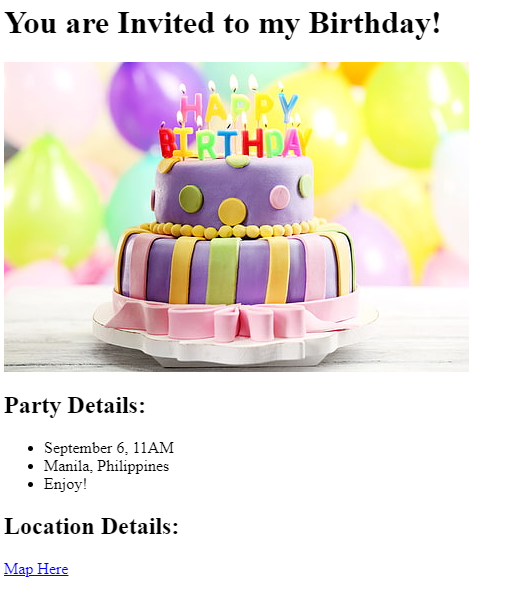

This project is a simple website where I show my top 3 movies of all-time. This is a very subjective list, so please save your wild reactions. Below is a screenshot of what you should expect to see on the website.
This is a virtual birthday invite I made that contains a few details such as the date and place, as well as a link to a google map location for the said event (the google map hyperlink is just an easter egg and not my actual location). Below is a screenshot of what you expect to see.
This my resume as of Feb. 2, 2024.